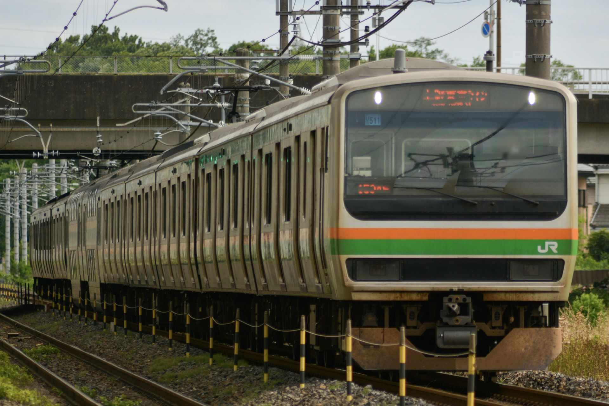
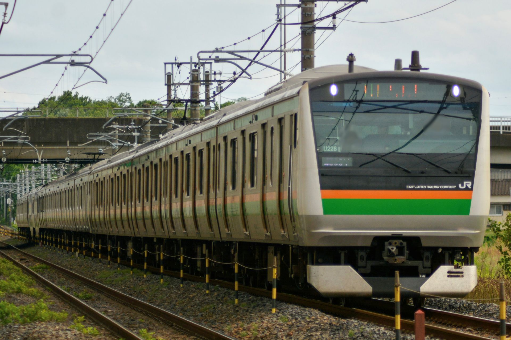
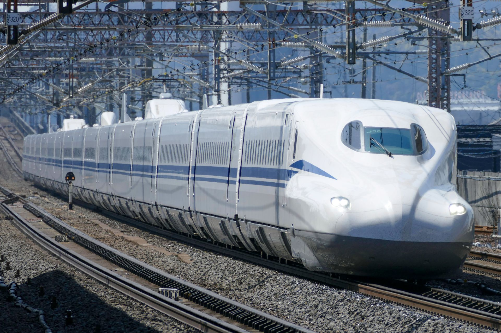

石橋付近を走行するE231系1000番台の
宇都宮線 自治医大～石橋間にて撮影 (2026/6/5)

石橋付近を走行するE233系3000番台
宇都宮線 自治医大～石橋間にて撮影 (2026/6/5)

E131系600番台
宇都宮線 岡本～宝積寺間にて撮影 (2026/6/4)

日鉄チキ
宇都宮線 宇都宮～岡本間にて撮影 (2026/6/4)

E531系 K456編成 KY出場試運転
東北本線 高久～黒磯間にて撮影 (2026/5/26)

米原を通過するN700系
東海道新幹線 米原駅にて撮影 (2026/5/26)

高久駅を通過するEH500牽引貨物
東北本線 高久駅にて撮影 (2026/3/9)

かみのやま温泉近くを走る719系
奥羽本線 茂吉記念館前～かみのやま温泉間にて撮影 (2026/1/4)

超有名撮影地 御徒町での山手線E235系
山手線 御徒町駅にて撮影 (2025/12/30)